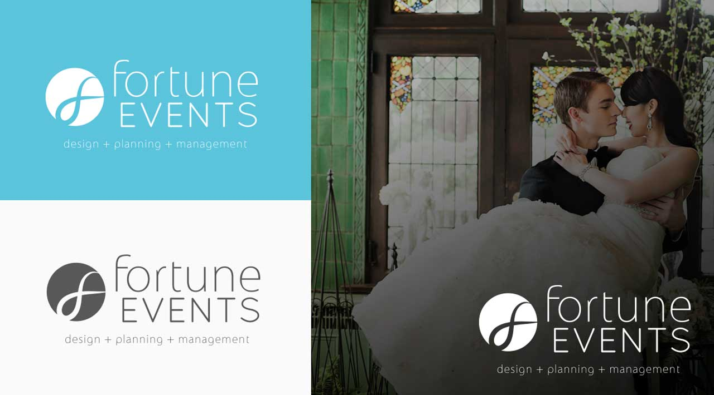
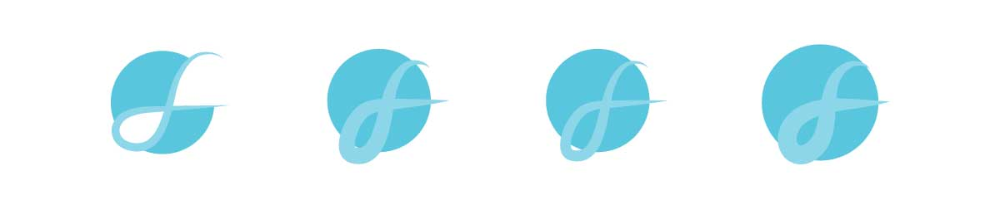

Today, Fortune Events is a thriving business with clients in happily-ever-after, and is a brand that is familiar and recognizable to married couples-to-be all over Vancouver.
We wanted a logo that was personal to the client, yet relatable to their customers. To us, the visual language of a gestural stroke expressed all of that within the logo. It is an abstraction of marriage and of the company’s founders, representing unity.
We consulted with our client, building their core values as a business to help give shape to their vision. As the client was open to our ideas and expertise, we were given complete creative freedom.
Brand Consultant, Artworker
Brand Consultation, Sketching, Typography, Print Prep, Client Collaboration
Francis Arevalo, David Huynh, Julia Wei
Styled by Fortune Events, taken by Kunioo for WedLuxe.com